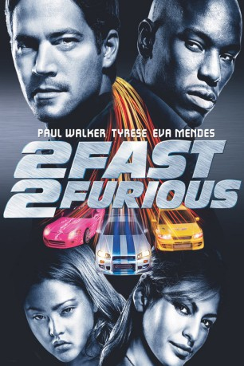

gesehen am 31.08.2015
gesehen am 31.08.2015Alternativ: 2 Fast 2 Furious (Originaltitel) gesehen am 31.08.2015
 
 IMDB-Wertung: 5.9 / 10
IMDB-Wertung: 5.9 / 10  Metascore:
Metascore: 
Dem Cop Brian O'Conner werden nach einem Einsatz in der illegalen Rennszene wegen nicht ganz legaler Ermittlungsmethoden Führerschein und Dienstmarke entzogen. Nun erhält der auf Eis gelegte Gesetzeshüter eine Chance zur Bewährung: Gemeinsam mit der Undercover-Agentin Monica soll er Licht ins Dunkel diffuser Transaktionen eines verdächtigen Geschäftsmannes in Miami bringen. Wie es sich so fügt, ist jener auch ein begeisterter Anhänger destruktiver Sportwagenevents.
Jahr: 2003
Dauer: 107 Minuten
FSK: 16
Land: USA Studio: Universal PicturesTonspuren: DTS - ,
Untertitel: Deutsch,
Auflösung: 1080p (1920x816) Größe: 8273 MB
Genre: Action, Krimi, Thriller
Regisseur:  John Singleton
John Singleton
Drehbuch: Gary Scott Thompson, Michael Brandt, Derek Haas, Gary Scott Thompson, Michael Brandt
Soundtrack: David Arnold
Darsteller:
 Paul Walker als Brian O'Conner
Paul Walker als Brian O'Conner Tyrese Gibson als Roman Pearce
Tyrese Gibson als Roman Pearce Eva Mendes als Monica Fuentes
Eva Mendes als Monica Fuentes Cole Hauser als Carter Verone
Cole Hauser als Carter Verone Ludacris als Tej
Ludacris als Tej Thom Barry als Agent Bilkins
Thom Barry als Agent Bilkins James Remar als Agent Markham
James Remar als Agent Markham Amaury Nolasco als Orange Julius
Amaury Nolasco als Orange Julius Michael Ealy als Slap Jack
Michael Ealy als Slap Jack Mark Boone Junior als Detective Whitworth
Mark Boone Junior als Detective Whitworth Mo Gallini als Enrique
Mo Gallini als Enrique Eric Etebari als Darden
Eric Etebari als Darden John Cenatiempo als Korpi
John Cenatiempo als Korpi Troy Robinson als Feliz Vispone
Troy Robinson als Feliz Vispone Marc Macaulay als Agent
Marc Macaulay als AgentDatei: X:\7+mehr(A-Z)\Fast and Furious\Fast and Furious 2 - 2 Fast 2 Furious (2003, FSK16, 1920x816).mkv seit 06.02.2015
Festplatte: HD Collection-7+mehr(A-Z)+Person
 Es gibt insgesamt 13 Filme in der Gruppe '7+mehr(A-Z)\Fast and Furious'
Es gibt insgesamt 13 Filme in der Gruppe '7+mehr(A-Z)\Fast and Furious'